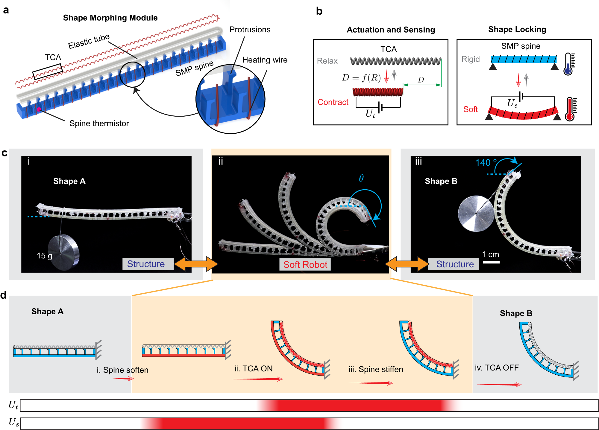

arXiv:2611.28641
CrossPanelExposing the Answer–Evidence Gap in Scientific Figure Understanding
* Equal contribution · arXiv, November 2026
Sample explorer

Read the printed circular-weight mass in the Shape A photograph in c and the U_t/U_s band-color combination at the leftmost Shape A endpoint in d. Which option is correct?
Panel notes
- Questions
- 2,650
- Disciplines
- 8
- Models evaluated
- 15
- Responses audited
- 3,765
Run the samples
Try four original figure questions with your own vision model. The evaluator reports overall, parallel, and dependent answer accuracy.
Model setup & prediction formatTerminal
git clone https://github.com/lululualululu/CrossPanel.git
cd CrossPanel
python3 -m evaluation predict \
--base-url http://localhost:8000/v1 \
--model YOUR_VISION_MODEL --output predictions.jsonl
python3 -m evaluation score --predictions predictions.jsonlUse the URL and model name of your vision server.
The benchmark
Can a model select the right answer and explain which experimental evidence supports it? CrossPanel follows objects and conditions across panels, then checks the stated binding and local readout.

The answer–evidence gap
Across 15 models, 8.42%–56.64% of correct answers on the diagnostic questions contain an explicit factual error.
Model comparison
View scores for all 15 models
| Model | Overall | Answer | Joint | Error given correct ↓ |
|---|---|---|---|---|
| Gemini 3.5 Flash-Lite | 73.40 | 75.70 | 66.14 | 8.42 |
| GPT-5.4 mini | 67.62 | 71.31 | 62.55 | 10.61 |
| Grok 4.3 (reasoning disabled) | 55.13 | 61.35 | 49.00 | 17.53 |
| GPT-4o (2024-11-20) | 44.98 | 52.99 | 37.45 | 24.81 |
| Qwen3.5-35B-A3B | 68.38 | 68.92 | 56.97 | 17.34 |
| DeepSeek V4.1 Flash (1017) | 63.85 | 72.11 | 57.37 | 18.78 |
| Qwen3.5-4B | 55.06 | 60.56 | 48.21 | 19.74 |
| Qwen2.5-VL-72B-Instruct | 48.00 | 53.78 | 35.86 | 20.74 |
| Ministral-3-14B | 44.94 | 52.59 | 36.65 | 27.27 |
| Qwen3-VL-30B-A3B | 44.08 | 53.39 | 34.66 | 34.33 |
| GLM-4.6V-Flash | 43.62 | 49.00 | 32.67 | 30.89 |
| InternVL3.5-38B | 42.64 | 49.80 | 29.08 | 32.80 |
| InternVL3.5-8B | 39.51 | 44.22 | 19.52 | 44.14 |
| Gemma-3-27B-IT | 39.47 | 46.22 | 19.12 | 48.28 |
| Molmo2-8B | 34.53 | 45.02 | 14.34 | 56.64 |
Citation
Download BibTeX@misc{lu2026crosspanel,
title = {{CrossPanel}: Exposing the Answer--Evidence Gap in Scientific Figure Understanding},
author = {Zhengyang Lu and {QianhongWen} and Chenpeng Wang and Qiang Huang and Ziyang Ling and Huan Li and {Chenziao} and Yibo Qiu and Xiaojie Cheng},
year = {2026},
eprint = {2611.28641},
archivePrefix = {arXiv},
primaryClass = {cs.CV},
url = {https://arxiv.org/abs/2611.28641}
}